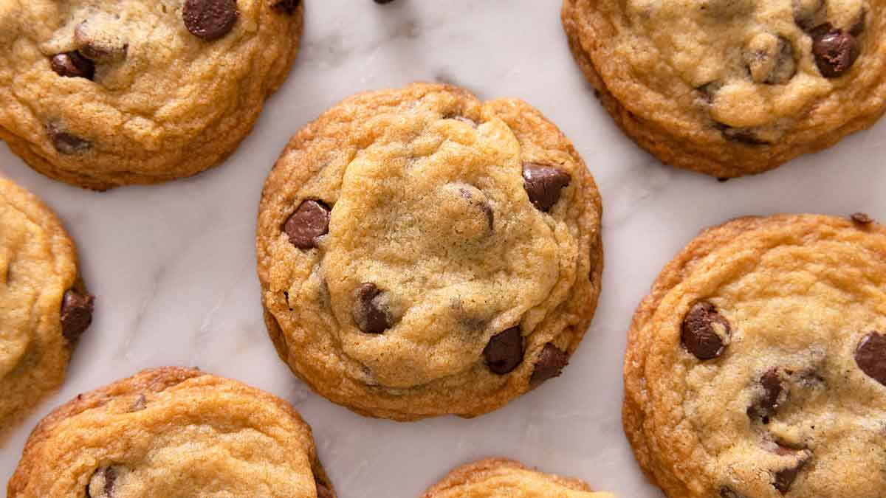

These are the best soft chocolate chip cookies ever! With perfectly chewy edges and a melt-in-your-mouth center, this is the only chocolate chip cookie recipe you'll need.
Instructions
Preheat the oven:
Start by preheating your oven to 350°F (175°C) so it's ready by the time you've prepared the dough.
Prepare your ingredients:
Measure out all your ingredients in advance. This will make the process much smoother.
Cream the butter and sugars:
In a large bowl, using a hand mixer or stand mixer, cream together the softened butter, white sugar, and brown sugar until the mixture is light and fluffy (2-3 minutes).
Add the vanilla and egg:
Beat in the vanilla extract and egg until well combined. The batter should look smooth and slightly lighter in color.
Mix the dry ingredients:
In a separate bowl, whisk together the flour, baking soda, and salt.
Combine wet and dry ingredients:
Gradually add the dry ingredients to the wet ingredients, mixing until just combined. Do not overmix.
Add the chocolate chips:
Fold in the chocolate chips using a spatula until evenly distributed.
Portion and bake:
Drop 1-2 tablespoon portions onto lined baking sheets, 2 inches apart. Bake for 10-12 minutes until edges are lightly golden.
Cool and enjoy:
Let cool on baking sheet for 5 minutes, then transfer to a wire rack to cool completely.
Comments
Emily: Absolutely loved these cookies! So soft and chewy.
Michael: My kids devoured these! Will definitely make again.